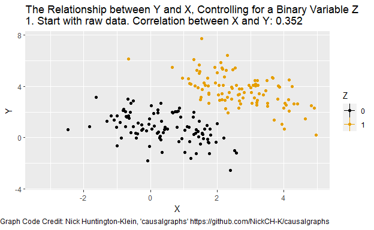
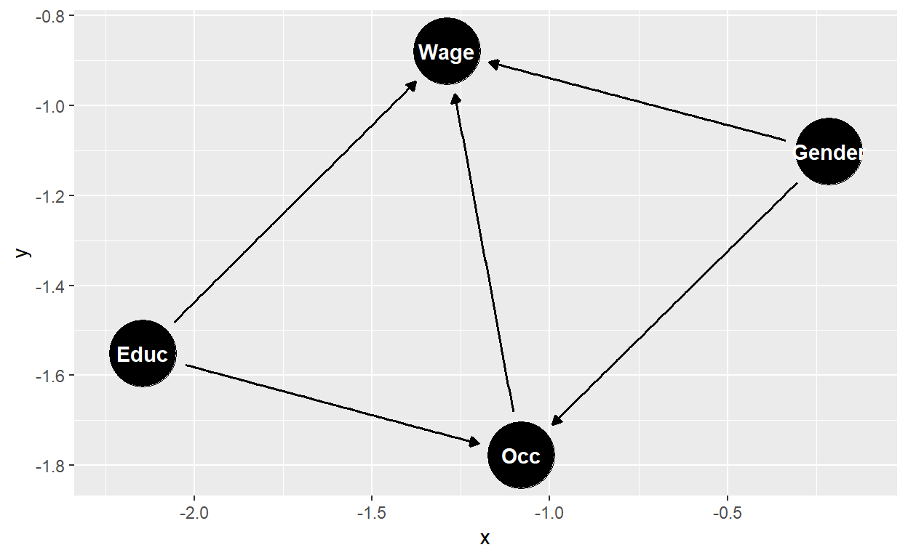
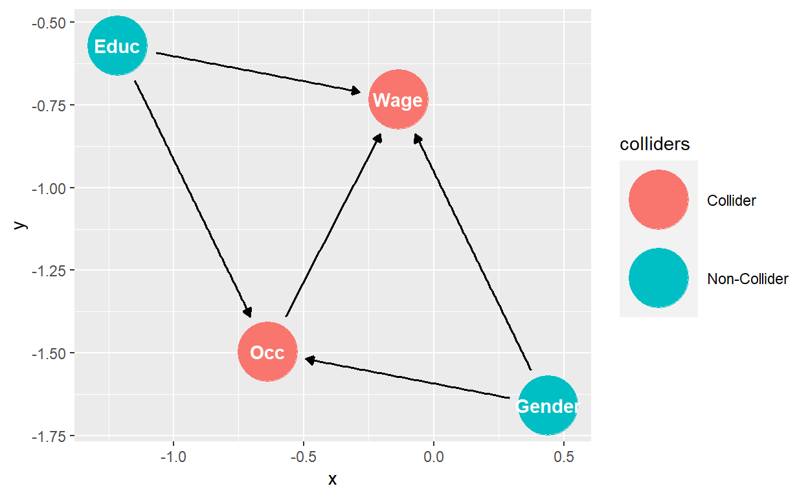

Omitted Variable Bias
Problem: if we misspecify our model, all bets are off!
- Estimated model: \(y = x_1\beta_1 + e\)
- Correct model: \(y = x_1\beta_1 + x_2\beta_2 + u\)
- When we omit relevant variables \(E(Xu) = 0\) but \(E(Xe)\) isn’t!
The presence of omitted variable bias requires:
- Omitted variables, \(x_2\) correlate with \(y\) and
- Omitted variables, \(x_2\) correlate with \(x_1\)
Graphical Demonstration (with Animation!)
The following graph shows how omitting a single relevant variable can introduce quite a bit of bias.
## ── Attaching core tidyverse packages ──────────────────────── tidyverse 2.0.0 ──
## ✔ dplyr 1.1.2 ✔ readr 2.1.4
## ✔ forcats 1.0.0 ✔ stringr 1.5.0
## ✔ ggplot2 3.4.2 ✔ tibble 3.2.1
## ✔ lubridate 1.9.2 ✔ tidyr 1.3.0
## ✔ purrr 1.0.1
## ── Conflicts ────────────────────────────────────────── tidyverse_conflicts() ──
## ✖ dplyr::filter() masks stats::filter()
## ✖ dplyr::lag() masks stats::lag()
## ℹ Use the conflicted package (<http://conflicted.r-lib.org/>) to force all conflicts to become errors
Click here to see the code for creating the animated graph.
df <- data.frame(Z = as.integer((1:200>100))) %>%mutate(X = .5 + 2*Z + rnorm(200)) %>%mutate(Y = -.5*X + 4*Z + 1 + rnorm(200),time="1") %>%group_by(Z) %>%mutate(mean_X=mean(X),mean_Y=mean(Y)) %>%ungroup()Calculate correlations
before_cor <- paste("1. Start with raw data. Correlation between X and Y: ",round(cor(df$X,df$Y),3),sep='')after_cor <- paste("6. Analyze what's left! Correlation between X and Y controlling for Z: ",round(cor(df$X-df$mean_X,df$Y-df$mean_Y),3),sep='')Add step 2 in which X is demeaned, and 3 in which both X and Y are, and 4 which just changes label
dffull <- rbind(Step 1: Raw data only
df %>% mutate(mean_X=NA,mean_Y=NA,time=before_cor),Step 2: Add x-lines
df %>% mutate(mean_Y=NA,time='2. Figure out what differences in X are explained by Z'),Step 3: X de-meaned
df %>% mutate(X = X - mean_X,mean_X=0,mean_Y=NA,time="3. Remove differences in X explained by Z"),Step 4: Remove X lines, add Y
df %>% mutate(X = X - mean_X,mean_X=NA,time="4. Figure out what differences in Y are explained by Z"),Step 5: Y de-meaned
df %>% mutate(X = X - mean_X,Y = Y - mean_Y,mean_X=NA,mean_Y=0,time="5. Remove differences in Y explained by Z"),Step 6: Raw demeaned data only
df %>% mutate(X = X - mean_X,Y = Y - mean_Y,mean_X=NA,mean_Y=NA,time=after_cor))p <- ggplot(dffull,aes(y=Y,x=X,color=as.factor(Z)))+geom_point()+geom_vline(aes(xintercept=mean_X,color=as.factor(Z)), na.rm = TRUE)+geom_hline(aes(yintercept=mean_Y,color=as.factor(Z)), na.rm = TRUE)+guides(color=guide_legend(title="Z"))+scale_color_colorblind()+labs(title = 'The Relationship between Y and X, Controlling for a Binary Variable Z \n{next_state}',caption="Graph Code Credit: Nick Huntington-Klein, 'causalgraphs'https://github.com/NickCH-K/causalgraphs")+transition_states(time,transition_length=c(12,32,12,32,12,12),state_length=c(160,100,75,100,75,160),wrap=FALSE)+ease_aes('sine-in-out')+exit_fade()+enter_fade()animate(p,nframes=200, renderer = gifski_renderer())Mathematical Derivation
\[E(\tilde\beta_1) = E[(X_1'X_1)^{-1}X_1'(X_1\beta_1 + X_2\beta_2 + u)]\]
\[ E(\tilde\beta_1) = \beta_1 + \beta_2E[(X_1'X_1)^{-1}X_1'X_2] \]
We can rewrite this as:
\[ E(\hat\beta_1) = \beta_1 + \beta_2\delta\]
where \(\delta\) is the coefficient from regressing \(X_2\) on \(X_1\), \(X_2 = X_1\delta + e\).
Irrelevant Variables
- Generate a random, independent variable,
sunspots, which takes values from a Poisson distribution with parameter \(\lambda = 10\) , as a new column inwage1. - Regress
wageoneduc,exper, andsunspots. - Compare this to the regression of
wageoneducandexper(excludingsunspots) by creating a text table instargazer().
# Remember that the `rpois(n, lambda)` function generates random samples from a Poisson distribution.
# Poisson distributions are a commonly-used theoretical approximation of random events that describe the number of times something occurs in a given time interval.
# A Poisson distribution has a variance equal to its mean, lambda. # This is science! It should be reproducible! Set a seed (`set.seed(8675309)`) before randomizing!# The exponential distribution is complementary to the Poisson: if a Poisson distribution describes the number of times something randomly occurs in a given time interval, then the time between occurrences will follow an exponential distribution with mean 1/lambda and variance 1/lambda^2.set.seed(8675309)
library(stargazer)
wage1 <- wooldridge::wage1
wage.lm2 <- lm(wage ~ educ + exper, data = wage1)
wage1$sunspots <- rpois(length(wage1$wage), lambda = 10)
wage.lm3 <- lm(wage ~ educ + exper + sunspots, data = wage1)
stargazer(wage.lm2, wage.lm3, type = 'text')A Caveat about Omitted Variables
Sometimes it’s helpful to draw the hypothesized pattern of causality.
There are some neat tools for this in the ggdag
package.
library(ggdag)##
## Attaching package: 'ggdag'## The following object is masked from 'package:stats':
##
## filterwageGapDag <- dagify(Wage ~ Educ + Gender + Occ,
Occ ~ Educ + Gender)
ggdag(wageGapDag) 
ggdag_collider(wageGapDag)
Multicollinearity
Perfect Multicollinearity
When a group of variables is perfectly collinear (linearly correlated), we cannot invert \(X'X\). It becomes akin to dividing by zero. Example: White/Nonwhite.
- Using the wage1 data create the variable
whiteequal to one minusnonwhite. - Regress
wageoneduc,exper,whiteandnonwhite. - Summarize the results with
summary().
##
## Please cite as:## Hlavac, Marek (2022). stargazer: Well-Formatted Regression and Summary Statistics Tables.## R package version 5.2.3. https://CRAN.R-project.org/package=stargazerwage1$white <- 1 - wage1$nonwhite
wage.lm4 <- lm(wage ~ educ + exper + white + nonwhite, data = wage1)
summary(wage.lm4)Perfect Multicollinearity without a Constant
Suppose I want to know the absolute magnitude of the intercept for each group (white/nonwhite).
- One way I could do this is by adding. The baseline for the omitted
group (here,
nonwhite) is the regular intercept. - Another way I could do this is to regress the model with both variables, excluding the intercept.
wage.lm5 <- lm(wage ~ educ + exper + white + nonwhite - 1, data = wage1)
summary(wage.lm5)We would rarely want to do it this way. If we are interested in how some categorical variable affects the outcome as a research hypothesis, we typically would only want to know how the outcome for the “treated” group differs from the “control” group. If we don’t care how that variable affects the outcome (i.e. it is “just a control variable”), then there is no reason to go to the trouble.
Imperfect Multicollinearity
Variance Formula - Scalar Form
Simple Regression Model
\[ Var(\hat\beta_j) = \frac{s^2}{SST_x} \]
Multiple Regression Model
\[\begin{align} \hat{Var}(\hat\beta_j) &= \frac{\hat{\sigma}_u^2}{SST_j(1-R_j^2)} \\ &= \frac{\hat{\sigma}_u^2}{(n-1)\hat{Var}(x_j)} \cdot \frac{1}{(1-R_j^2)} \\ &= \tilde{s}_{\hat{\beta}_j}^2 \cdot VIF \end{align}\]
Effect of Multicollinearity 1. \(SST_j = \sum_{i=1}^n{(x_{ij} - \bar{x}_j)^2}\) 2. \(R_j^2\) is the \(R^2\) obtained from regressing \(x_j\) on all other \(x'\)s and a constant. 3. The more correlated \(x_j\) is with the other \(x'\)s, the more inflated the variance becomes.
Bias-variance trade-off.